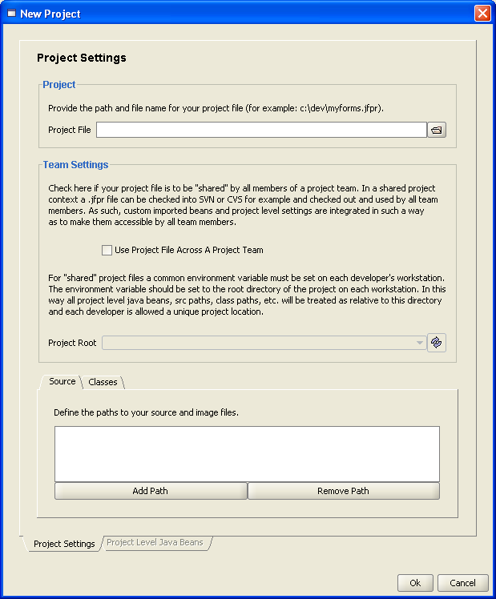
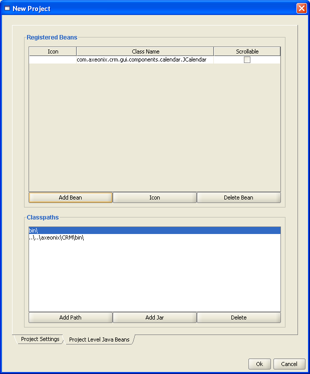
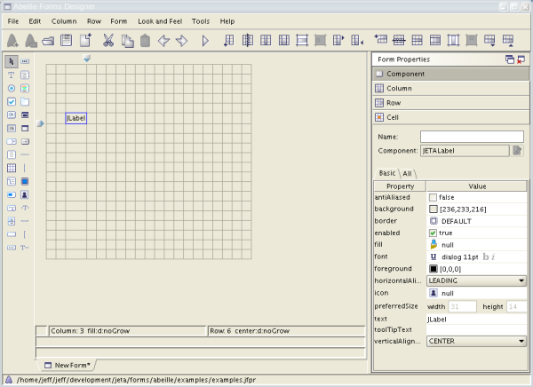
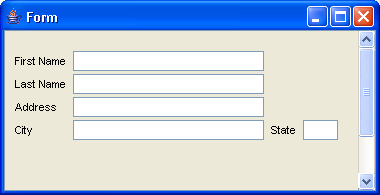
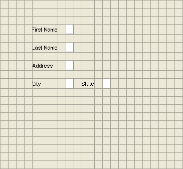

Abeille Forms Designer is a tool for quickly designing cross-platform graphical user interfaces. Abeille is a Swing based application and uses Swing components.
Abeille depends on the JGoodies FormLayout Manager (Abeille includes all the software you need). Users can create forms by dragging Swing components from a pallette to a cell on the currently active form. Once GUI is completed, the design information is saved to a file. Abeille is not a code generator. A forms runtime (formsrt.jar) is used to load and display the form in your application.
To start Abeille, type the following in a console window:
java -jar designer.jar
The Forms Designer has several sample forms that demonstrate the powerful capabilities of the builder. These forms are located in the examples directory. To correctly view these forms, follow the instructions in the README.txt file in the examples directory.
Create a new project by selecting New Project from the File menu.

The Project File field allows you to specify where to store this project information. Provide a path and filename where your project file can be stored.
Abeille allows you to use images as well as include nested forms within other forms. To do this, images and nested forms must be loaded from the CLASSPATH during runtime. Therefore, you must provide the root paths to your image and form resources. This is basically the path to the topmost package where your image resources will be located in the CLASSPATH. The same applies to your forms. It is recommended that you store your forms in the same location as your Java source files. Therefore, you should include the path(s) to your Java source files in addition to your image files.
After designating a project file it may also be declared for shared usage across a project team. The .jfpr project file may then be checked into SVN, CVS, or another version control system and checked out and shared by all members of the team. Check the corresponding checkbox to indicate that the project file is to be used in a team setting. When checked the "Project Root" drop down will become enabled along with the "Project Level Java Beans" tab.
When enabled the "Project Root" drop down will be populate with environment variables available on the operating system that Abeille is running on. In planning and preparing for setting up a shared project it should be determined in advance what the common environment variable should be named. Each workstation should then be configured to have this common environment variable set to the root project directory for each workstation used on the project. In a team setting Abeille requires that this variable be specified and for each workstation all source paths, class paths, java bean paths, etc. will be designated as relative to the project root specified by this variable.
For shared project files additional java beans may be specified at the project level. These beans will only be available when the shared project is opened in Abeille and will appear on the java beans palette. Likewise when a project is closed all project level beans will be removed from the beans palette.

For this first example, we will use unnamed packages. We will also assume that our development directory is c:\myforms. In this directory we will put our Java source, images, and form files. Create a new project in c:\myforms and add c:\myforms to the Paths list in the Project settings dialog.
Once your project is created, press the Create Form button on the toolbar. This should create an empty form as follows:

For this example, we would like to create a simple data entry form:

The first step is to add the labels. Select the JLabel tool from the palette. Next, click on a cell in the current form. The exact location of the cell is not critical at this point. Simply choose a cell that is approximately where you think the label should appear on the form. (note that it is very easy to polish the form once you have decided on a design).
Repeat this procedure three times so that we have four labels on the form. Make sure to include an empty row beneath each lable. This will prevent the componets from being to close to one another on the form.
Now, click on each label on the form so that its properties can be accessed in the property editor to the right of the form. Scroll down and select the Text property. Enter the appropriate text for each label on the form.
Keep in mind that most layout managers in Java don't require you to manually set the sizes for components - that's that layout manager's job. The FormLayout manager (which Abeille is based) is no different. Components are arranged and sized based on the row, column, and cell constraints of the form and not by manually setting the component dimensions. This approach is much more powerful than doing it manually. This will become evident when we want to constrain components to automatically resize when the form is resized.
Next, add the JTextField components to the form. Click on the JTextField button on the tool palette and then click on the cell where the text field should go. You should leave a column between the text field and its label. This will provide a small amount of space to separate the lable and the field. At this point your form should appear as follows:

By looking at the form, it is obvious that the text fields are not wide enough. When a form is first created, all cells are set to automatically size themselves based on the preferred size of the component. All cells in a row must have the same height. Likewise, all cells in a column must have the same width. Now, an empty text field has a small preferred width (that's because there is no text). However, the preferred height of the field is dependent on the default font of the field. That is why the text fields have a reasonable height but their width is too short.
We would like to constrain the First Name, Last Name, Address and City text fields to fill up any available space in the horizontal direction. To accomplish this, we must change the Column Specification for the column that contains our text fields.
Select the Column Spec editor on the right side of the builder. The options in this editor are described in the FormLayout whitepaper which is included in this documentation.
In the Column Spec, select the Grow radio button. This will constrain the column to increase/descrease its size such that it takes up 100% of the available space (in the horizontal direction) on the form. Now, select the state text field. Instead of growing, we want this component to have a fixed width. In the Column Size pane select the Constant radio button. Set the Constant size to 20 DLU.
The following figure shows the control panels for changing the row and column specifiations for the currently selected form. See the included FormLayout whitepaper for a full description of row and column specifications.
|
Now the form is beginning to take shape. The designer
window is very close to WYSIWYG. However, to see the true rendering of
the form, you should click the Show Form button on the toolbar. Notice
that the vertical spacing between each label and text field is a little
too large. To fix this, first close the preview window. Next, click on
one of the empty rows between the labels. Click the Set As Row
Separator button on the toolbar. This should change the row height to a
reasonable setting. Repeat this procedure for every empty row between
the labels on the form. You can also remove any empty rows and columns
that surround the components by clicking the appropriate buttons on the
toolbar.
Components on your form are accessed in Java using their names. It
is important to provide unique names for each component that you wish
to access in code. To assign a name, simply click the component and
type the name in the Properties Panel. Components can then be accessed
in your code as follows:
FormPanel panel = new FormPanel( "myform.jfrm" ); |
Now your form is complete. You should save it to the source directory, c:\myforms. The next step is to write a Java program that reads the form and displays it.
Working with Abeille Forms in Java is easy. Simply instantiate a com.jeta.forms.components.panel.FormPanel object and pass the name of the form file as an argument to the constructor. Then add the FormPanel object to a Swing container in your application. FormPanel is a type of JPanel so it can be easily integrated into another Swing container such as a JDialog.
For our example we created a form file called myform.jfrm. For this example we are also using unnamed packages; therefore, our FormPanel declaration would appear as follows:
FormPanel panel = new FormPanel( "myform.jfrm" );
Simple example application:
import java.awt.*; |
Keep in mind that if you are using named packages, you must include the package name as well as the form file when creating FormPanel instances. All forms are loaded from the classpath during runtime. If the above example were stored in the package com.abc.myapp, the code would appear as follows:
FormPanel panel = new FormPanel( "com/abc/myapp/myform.jfrm" );
To build and run your application, simply include the JAR file formsrt.jar in your classpath. This file can be found in your Abeille Forms installation directory.